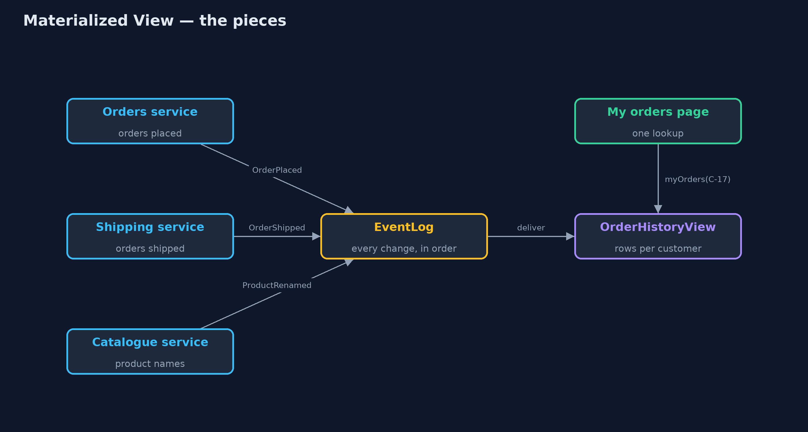
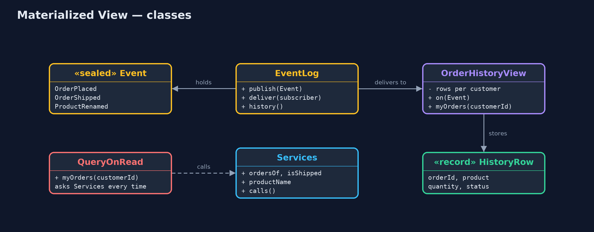
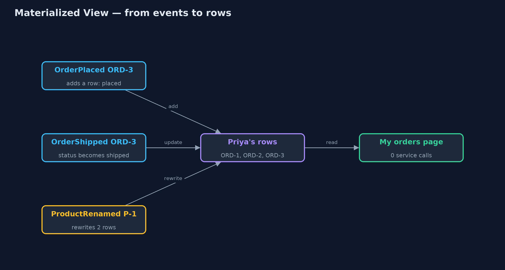
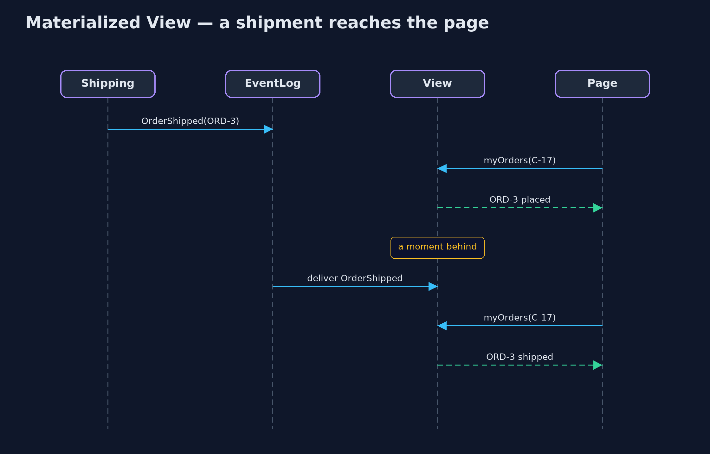

Materialized View Pattern
src/main/java/com/jk/explore/materializedview/
├── Event.java Something that happened in one of the services, published so others can react
├── EventLog.java The events, in order: kept forever for replay, and delivered to the view only when deliver() is called
├── HistoryRow.java One line of the "my orders" page: which order, what was bought, how many, and whether it has shipped
├── MaterializedViewDemo.java The five acts: the page built by asking three services, the ready-made view, the lag, the rebuild, and the bill
├── OrderHistoryView.java The pattern: a ready-made table of every customer's order history, kept up to date from events
├── QueryOnRead.java The page without the pattern: asks all three services every time someone opens it
└── Services.java The three services that own the data: orders, shipping and the catalogue, each counting its callsWhen a page needs data from several services, keep a ready-made copy shaped exactly for that page, and update it from events, instead of asking every service on every visit.
Materialized View is a microservices pattern for reading data that lives in several services. Instead of asking each service every time a page is opened, you keep a separate, ready-made table shaped exactly for that page. The services publish events when their data changes, and the view listens and updates itself.
Reading the page is then a single lookup. It is fast, and it keeps working when one of the services is down. The price is that the view is a copy: it can be a moment behind, and it has to be kept in step.
The idea in everyday terms
Think of the departures board at a railway station. Nobody phones each train company when a passenger wants to know which platform to go to. The board is prepared in advance, and each company sends an update when a train is delayed or changes platform. Passengers just read the board.
For a few seconds after a change, the board can be behind. That is the deal: instant answers for everyone, in return for a short delay in updates.
The scenario
The online store's "my orders" page shows each order, the product's name, the quantity and whether it has shipped. That data lives in three services: orders, shipping and the catalogue. The page asked all three on every visit: seven calls for a customer with three orders, and a broken page whenever the catalogue was down.
Run
./gradlew runThe demo tells the story in 5 acts, each printing exact numbers that the tests check:
| Act | What it shows |
|---|---|
| 1. Asking three services | One page with 3 orders makes 7 service calls, about 280 ms of waiting; with the catalogue down, the page fails. |
| 2. A ready-made view | The view hears 7 events and writes 3 rows; the page is served with 0 service calls, catalogue still down. |
| 3. A moment behind | ORD-3 ships; until the event is delivered the page says placed, a moment later shipped. |
| 4. Rebuild from the events | Replaying all 8 events into an empty view gives exactly the same page. |
| 5. The bill | Renaming the kettle changes 1 name in the catalogue but rewrites 2 rows in the view; 3 rows are stored twice. |
Test
./gradlew test12 tests in DemoRunsTest, OrderHistoryViewTest. Every number the demo prints is asserted, and nothing depends on the clock, so every run gives the same result.
Technologies and versions
| Technology | Version | Used for |
|---|---|---|
| Java | 21 | the code (toolchain set in build.gradle) |
| Gradle | 9.2.1 (wrapper) | build and run, nothing to install |
| JUnit | 5.10.2 | the tests |
| videokit | repository tool | the narrated video and animation: Piper en_US-amy-medium, speed 0.8, longer pauses (the approved amy-slow voice) |
Learning Material
| Document | What it is for |
|---|---|
| Problem statement | the situation and what the project must show |
| Prerequisites | what you need to know first |
| Materialized View, explained | the acts in prose |
| Session guide | a one-hour lesson with exercises |
| Animated walkthrough | the acts step by step, narrated |
| Spec | what this project must be true of |
The pattern in one picture
The services publish events; the view listens; the page reads only the view.

Where each piece sits
One sealed event type, one log, and one view with a single method that reacts to each kind of event.

How the data moves
Each event changes a row; the page reads the rows as they are.

Who calls whom, in order
The change is published once; every later read is served from the view.

Video
video/materialized-view-pattern-explained.mp4 (with .m4a audio and .srt subtitles) is built by video/build_video.sh. Rendered media is not committed.
What it costs
- The view can be behind. Between an event happening and the view hearing about it, the page shows the old state.
- A copy to keep in step. Rows are stored twice, and a single change, such as renaming a product, can rewrite many rows.
- Events are required. The services must publish every change, and the view must never miss one.
- More moving parts. Something has to run the view, store it, and rebuild it when its shape changes.
When this is too much
When one service already holds everything the page needs, just ask it. And when the page must be exactly current, such as a bank balance before a payment, read from the owning service instead of a copy that may be behind.
Where you have already met this
- Database materialized views, such as
CREATE MATERIALIZED VIEWin PostgreSQL. - The read side of CQRS, where commands and queries use different models.
- Search indexes such as Elasticsearch, filled from events or change data capture.
- Dashboards and reports built from a nightly or streaming copy of the data.
Where this sits
This project is in micro-services-design-patterns, next to API Composition, which answers the same question by asking every service at the moment of reading. Materialized View answers it in advance.